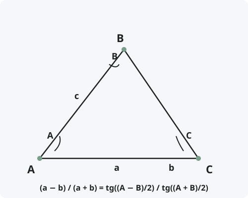

Теорема тангенсов
Формулировка
Разность двух сторон треугольника относится к их сумме, как тангенс полуразности противолежащих углов относится к тангенсу полусуммы этих углов.
Обозначения
Пусть дан треугольник ABC со сторонами:
a = BC — сторона, противолежащая углу A
b = AC — сторона, противолежащая углу B
c = AB — сторона, противолежащая углу C
Тогда для любых двух сторон и противолежащих углов:
(a − b) / (a + b) = tg((A − B)/2) / tg((A + B)/2)
(b − c) / (b + c) = tg((B − C)/2) / tg((B + C)/2)
(c − a) / (c + a) = tg((C − A)/2) / tg((C + A)/2)

Доказательство
Теорема доказана.
Следствия из теоремы
- Теорема тангенсов позволяет находить неизвестные стороны и углы треугольника, если известны две стороны и угол между ними, либо два угла и сторона.
- Если a = b, то A = B (равнобедренный треугольник) — формула даёт tg((A − B)/2) = 0.
- Теорема особенно удобна при логарифмических вычислениях, так как заменяет умножение и деление сложением и вычитанием.
- В комбинации с теоремой синусов позволяет решать треугольники без использования косинусов.
Примеры применения
Пример 1. В треугольнике даны стороны a = 10, b = 7 и угол C = 60°. Найдите углы A и B.
Решение: Сначала найдём A + B = 180° − 60° = 120°. Затем по теореме тангенсов: (10 − 7) / (10 + 7) = tg((A − B)/2) / tg(60°).
3/17 = tg((A − B)/2) / √3 ⇒ tg((A − B)/2) = 3√3/17 ≈ 0,305 ⇒ (A − B)/2 ≈ 17°.
Решаем систему: A + B = 120°, A − B = 34° ⇒ A = 77°, B = 43°.
Пример 2. В треугольнике даны углы A = 80°, B = 40° и сторона a = 12. Найдите сторону b.
Решение: По теореме тангенсов: (12 − b) / (12 + b) = tg(20°) / tg(60°) = tg 20° / √3 ≈ 0,364 / 1,732 ≈ 0,21.
12 − b = 0,21·(12 + b) ⇒ 12 − b = 2,52 + 0,21b ⇒ 9,48 = 1,21b ⇒ b ≈ 7,83.
Историческая справка
Теорема тангенсов была открыта арабским математиком Абу-ль-Вафой в X веке, хотя некоторые источники приписывают её персидскому астроному Ал-Баттани (IX век).
В Европе теорема стала известна благодаря работам Региомонтана (XV век) и Франсуа Виета (XVI век).
До появления калькуляторов теорема тангенсов широко использовалась в навигации и астрономии вместе с логарифмическими таблицами, так как позволяла избегать громоздких умножений.
Интересные факты
- Теорема тангенсов менее известна, чем теоремы синусов и косинусов, но очень удобна при решении треугольников по двум сторонам и углу между ними.
- В эпоху парусного флота теорема тангенсов была основным инструментом штурманов для прокладки курса.
- Теорема тангенсов эквивалентна формуле Мольвейде, используемой в сферической тригонометрии.
- В некоторых странах теорему тангенсов называют «формулой Региомонтана».
- Современные навигационные системы (GPS) используют алгоритмы, основанные на расширенных версиях теоремы тангенсов для сферы и эллипсоида.